Smart Cell Emulator card
Description of the Smart Cell Emulator card for HIL Connect hardware
Card Overview
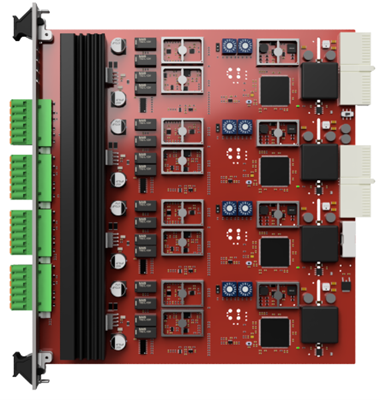
The Smart Cell Emulator card is designed to emulate any given chemistry of batteries found in almost all applications. At the same time, it can deliver a given voltage and measure the current passing into or out of the emulated battery. This is all done by the sophisticated design of each card delivering power supply like behavior next to measurement capabilities at a high rate. Cards can also be easily scaled with CAN FD to provide bigger battery packs, with easy software configuration via the Battery Cell and Battery Pack components in Typhoon HIL Control Center.
Functional Description
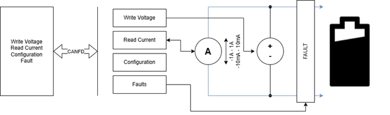
As Figure 2 demonstrates, the initial idea of the cell emulator is to emulate the voltage and current parameters of a battery cell. Next to those main parameters, there are faults and other configuration parameters. Everything above is sent and received over CAN FD.
Fault Insertion
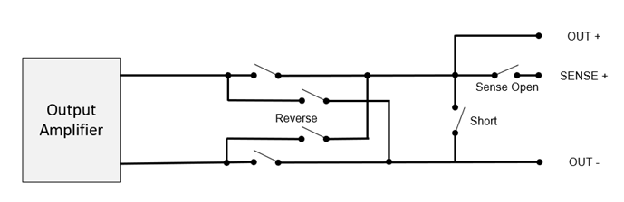
Each channel has a built-in fault insertion unit: (Sense) Open, Short and Reverse Polarity.
- (Sense) Open – disconnects the battery positive terminal from the SENSE+ terminal leading to the BMS sense lines. It is important to note that this is not a BUS BAR fault.
- Short – shorts the OUT+ and OUT- terminals, thus the battery positive and negative terminals. It is important to note that the cell emulator won’t go into over-current mode, as it is protected when this fault is active.
- Reverse Polarity – the OUT+ and OUT- terminals switch their function, thus the battery positive and negative switch functions.
It is important to note that all faults are physical switches and the connections are mechanically shorted or opened, as shown in Figure 3.
Smart Cell Emulator card revisions
| Code | Revision | Part number |
|---|---|---|
| NM | 3.1 | 26118 |
| ND | 3.0 | 25542 |
Smart Cell Emulator card hardware specification
The Smart Cell Emulator card features 4 channels. It is Galvanically Isolated up to 1000 V. Its electrical and measurement characteristics are shown in Table 2.
| Type | Signal Range | Sample Rate | Resolution | Accuracy | Max Load |
|---|---|---|---|---|---|
| Voltage Output | 0..8 V | 10 ksps | 122 μV | 0.5 mV ±0.05% | ±1 A |
| Voltage Measurements | 0..8 V | 100 ksps | 122 μV | 1 mV ±0.1% | 0..8 V |
| High - Current Measurements | ±1 A | 100 ksps | 15 μA | 0.2 mA ±0.05% | ±1 A |
| Low - Current Measurements | ±10 mA | 100 ksps | 152 nA | 50 uA ±0.05% | ±10 mA |
| Temperature Measurements | -40…80 °C | 100 ksps | 0.1 °C | 0.5 °C ±0.25% | - |
CAN FD Protocol Support
| Specification Name | Value | Comment |
|---|---|---|
| Cell Emulator CAN FD ID | 1… 255 (0x01…0xff) | C0/0x00 is a broadcast ID |
The ID of each channel must be defined by the two hex rotary switches.
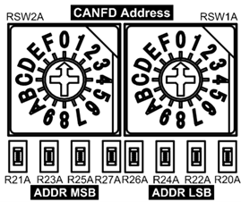
Pin Configuration and Functions
Each channel has its own connector, which is isolated from each other.
Each channel has six pins: OUT+, BMS+, OUT-, OUT-, TMP+ and TMP-.
Next to the 6-pin connector, each channel has an RGB LED assigned to it. The LEDs purpose is to indicate the current condition the channel is in.
| Connector | Pin Count | Pin Name | Description | Image |
|---|---|---|---|---|
| X1 | 1 | OUT+ | Constant POSITIVE voltage output of the cell. | 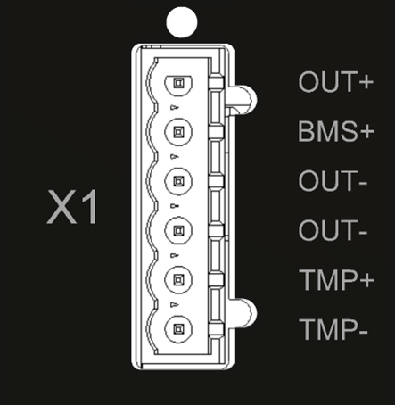 |
| X1 | 2 | BMS+ | Voltage output of the cell routed to the BMS. On this pin, Fault OPEN is used | |
| X1 | 3 | OUT- | Constant NEGATIVE voltage output of the cell | |
| X1 | 4 | OUT- | Constant NEGATIVE voltage output of the cell | |
| X1 | 5 | TMP+ | Positive side of temperature sensor. | |
| X1 | 6 | TMP- | Negative side of temperature sensor. |
| Connector | Pin Count | Pin Name | Description | Image |
|---|---|---|---|---|
| X2 | 1 | OUT+ | Constant POSITIVE voltage output of the cell. | 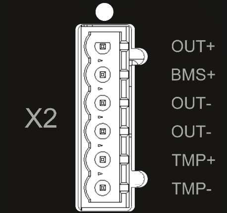 |
| X2 | 2 | BMS+ | Voltage output of the cell routed to the BMS. On this pin, Fault OPEN is used | |
| X2 | 3 | OUT- | Constant NEGATIVE voltage output of the cell | |
| X2 | 4 | OUT- | Constant NEGATIVE voltage output of the cell | |
| X2 | 5 | TMP+ | Positive side of temperature sensor. | |
| X2 | 6 | TMP- | Negative side of temperature sensor. |
| Connector | Pin Count | Pin Name | Description | Image |
|---|---|---|---|---|
| X3 | 1 | OUT+ | Constant POSITIVE voltage output of the cell. | 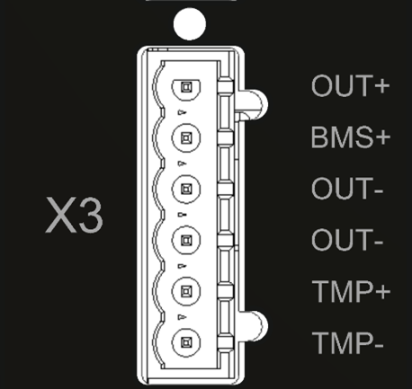 |
| X3 | 2 | BMS+ | Voltage output of the cell routed to the BMS. On this pin, Fault OPEN is used | |
| X3 | 3 | OUT- | Constant NEGATIVE voltage output of the cell | |
| X3 | 4 | OUT- | Constant NEGATIVE voltage output of the cell | |
| X3 | 5 | TMP+ | Positive side of temperature sensor. | |
| X3 | 6 | TMP- | Negative side of temperature sensor. |
| Connector | Pin Count | Pin Name | Description | Image |
|---|---|---|---|---|
| X4 | 1 | OUT+ | Constant POSITIVE voltage output of the cell. | 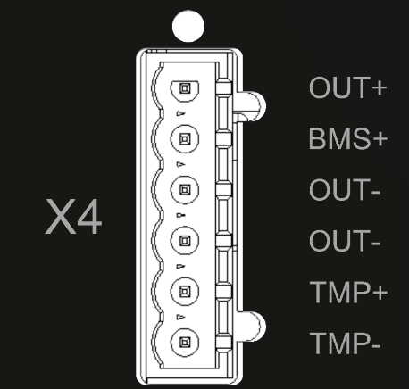 |
| X4 | 2 | BMS+ | Voltage output of the cell routed to the BMS. On this pin, Fault OPEN is used | |
| X4 | 3 | OUT- | Constant NEGATIVE voltage output of the cell | |
| X4 | 4 | OUT- | Constant NEGATIVE voltage output of the cell | |
| X4 | 5 | TMP+ | Positive side of temperature sensor. | |
| X4 | 6 | TMP- | Negative side of temperature sensor. |
LED Description
The LED changes between colors WHITE, RED, GREEN and YELLOW. It can be STATIC or BLINKING. Combining the colors and modes, use Table 8 to diagnose the card condition.
| Mode | Red | Green | Yellow | White |
|---|---|---|---|---|
| STATIC | Bootloader | Calibrated Received Data |
Not Calibrated Received Data |
X |
| BLINK | Fault | Calibrated Not Received Data |
Not Calibrated Mpt Received Data |
PING |
Smart Cell Emulator card connector data
| Parameter | Value |
|---|---|
| PCB connector part number | 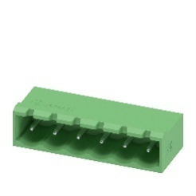 |
| Mating connector part number | 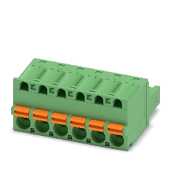 |
Card Wiring
Wiring Multiple Channels
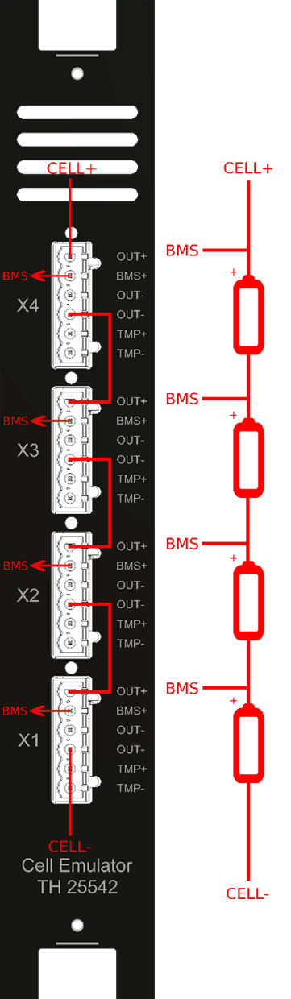
Figure 6 showcases that wiring 4 channels is a simple procedure. To connect cells in series to achieve higher voltage, the positive terminal (Pin 1 – OUT+) is connected to the next cells negative terminal (Pin 3 or Pin 4 – OUT-).
Pin 2 – BMS+ is used to connect the BMS to each cell for the voltage measurement.
To connect more than 4 channels, the CELL+ (4th channels positive terminal) has to be connected to the next series CELL-. This is done for every card.
Bus Bar PCB
To simplify the wiring of large systems, a Bus Bar PCB is available, as shown in Figure 7.
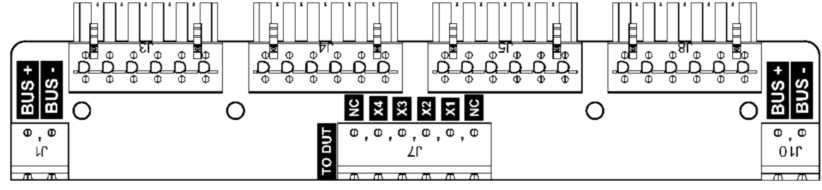
The Bus Bar allows for connecting Cell Emulator card channels in series and simplifies the wiring with the BMS, and with the next Cell Emulator card.
Figure 8 shows the pinout and internal wiring of the bus bar.
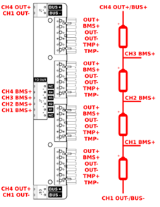
Figure 9 shows the wiring of multiple bus bars, which is commonly used in testbeds with multiple Cell Emulator cards.
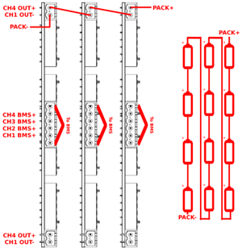
Calibration and Adjustment Options
An automatic calibration tool for calibrating individual Cell Emulator cards is available.
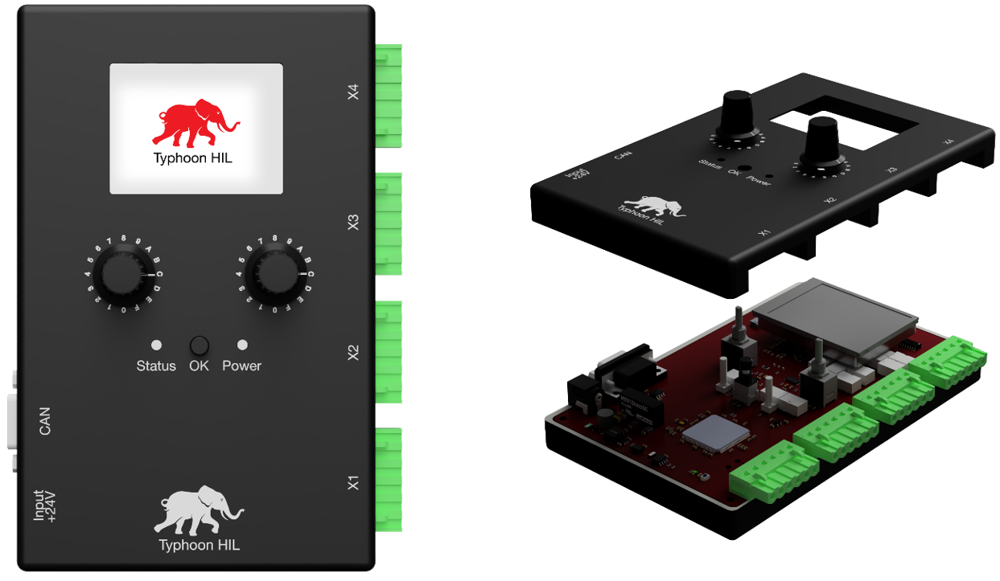
The Cell Emulator Calibrator, as shown on Figure 10 is a device through which each Cell Emulator card is automatically calibrated.
The device calibrates the following parameters of each channel:
- Voltage
- High and Low Current Measurements
- Temperature Measurements
- UNIX time of calibration
Figure 11 showcases the non-calibrated vs. calibrated HIGH mode current measurement on a sample Cell Emulator channel at 188 mA, 377 mA and 566 mA loads. The measurements were compared to a calibrated instrument and measured in a laboratory setting.
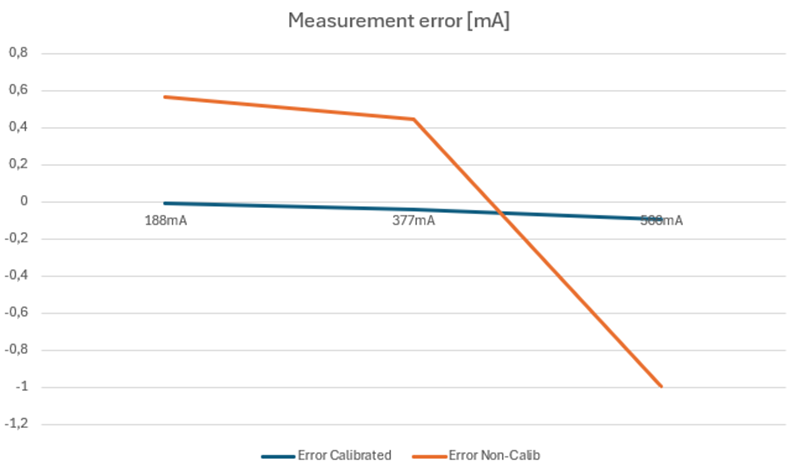
Environmental Characteristics
| Characteristic | Range |
|---|---|
| Operating Temperature | 10..40°C |
| Operating Humidity | Up to 80% |
| Operating Elevation | Up to 2000 m |
| Storage Temperature | 0..60°C |
| Storage Humidity | Up to 80% |
Performance Graphs and Test Data
Figure 12 shows the output response when loaded with 500 Hz, 50% duty cycle, 1 A load on the output of the cell emulator delivering 8 V.
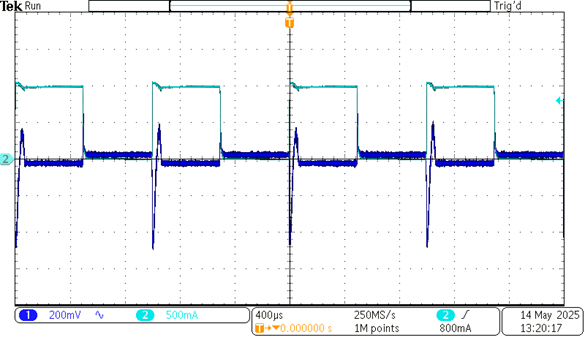
Figure 13 shows the linearity of the DAC stages after calibration, while Figure 14 shows the linearity of the ADC stages after calibration.
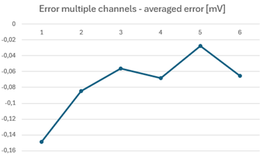
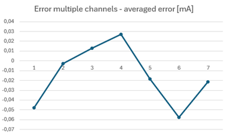
Firmware Information
Firmware updates are available via a dedicated tool, developed by Typhoon HIL.
Currently, the firmware update procedure is done through CAN FD and a custom software tool provided by Typhoon HIL. This tool is shared only in specific situations, and therefore is not part of the standard package that comes with the Cell Emulator.